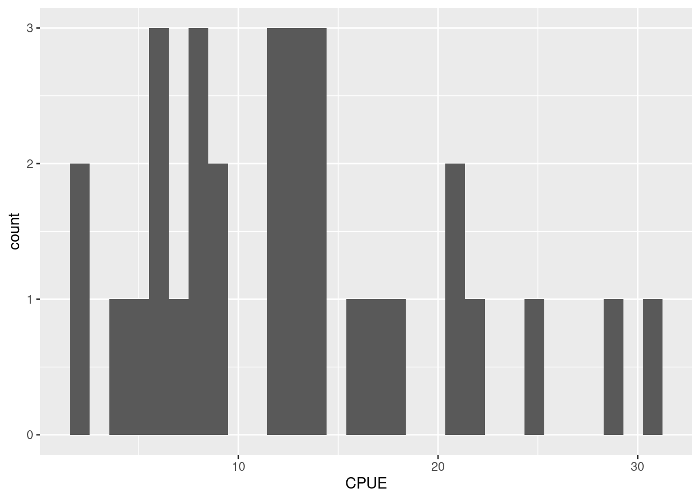
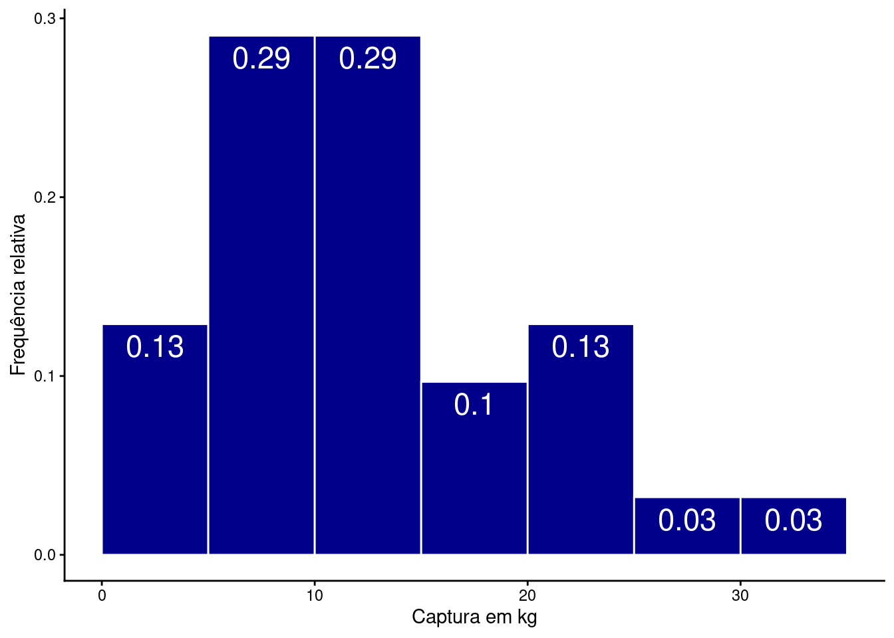
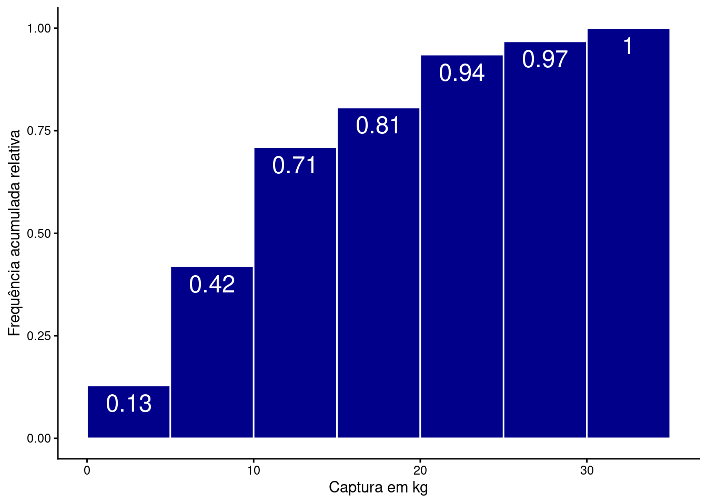

library(tidyverse)
library(gt)Descrevendo variáveis quantitativas
R
Ciência de dados
Análise de dados
Estatística descritiva
Variáveis quantitativas
Distribuição de frequência
Exploração de variáveis quantitativas por meio de tabelas de frequência, histogramas e gráficos de frequência acumulada.
Pacotes e funções utilizados
Variáveis quantitativas podem ser discretas ou contínuas. A descrição dos padrões de distribuição para esses tipos de variáveis é feita utilizando tabelas (frequência e frequência acumulada) e gráficos (histogramas ou gráficos de frequência acumulada).
1 Tabelas de frequência para variáveis quantitativas
A construção de tabelas de frequências para variáveis quantitativas necessita que agrupemos as observações em faixas de valores. Veja as observações abaixo por exemplo:
\(X =\) {2.66, 3.72, 5.73, 9.08, 2.02, 8.98, 9.45, 6.61, 6.29, 0.62}
Podemos agrupá-las nas seguintes faixas de valores:
(0,2], (2,4], (4,6], (6,8], (8,10]
Estas faixas de valores são denominadas de intervalos de classe. Se alocadas nestes intervalos, as observações ficam:
X <- c(2.66, 3.72, 5.73, 9.08, 2.02, 8.98, 9.45, 6.61, 6.29, 0.62)
Classes <- cut(X, seq(0, 10, by = 2))
df <- data.frame(X, Classes)
df |>
gt()| X | Classes |
|---|---|
| 2.66 | (2,4] |
| 3.72 | (2,4] |
| 5.73 | (4,6] |
| 9.08 | (8,10] |
| 2.02 | (2,4] |
| 8.98 | (8,10] |
| 9.45 | (8,10] |
| 6.61 | (6,8] |
| 6.29 | (6,8] |
| 0.62 | (0,2] |
Uma tabela de frequência para estas observações é construída contando o número de observações por intervalo de classes. Neste caso:
df |>
group_by(Classes) |>
summarise(Frequencia = n()) |>
gt()| Classes | Frequencia |
|---|---|
| (0,2] | 1 |
| (2,4] | 3 |
| (4,6] | 1 |
| (6,8] | 2 |
| (8,10] | 3 |
Na coluna Frequencia, temos o número de observações da variável X para cada um dos intervalos de classe.
1.1 Alterando o tamanho dos intervalos de classe
No exemplo anterior, definimos os limites dos intervalos de classe de 2 em 2 unidades. Poderíamos ter escolhido outros tamanhos, por exemplo, de 4 em 4. Neste caso teríamos:
Classes <- cut(X, seq(0, 12, by = 4))
data.frame(X, Classes) |>
group_by(Classes) |>
summarise(Frequencia = n()) |>
gt()| Classes | Frequencia |
|---|---|
| (0,4] | 4 |
| (4,8] | 3 |
| (8,12] | 3 |
Note que ao escolhermos o tamanho dos intervalos de classe, estamos criando a variável qualitativa ordinal Classes, a partir do agrupamento das observações em X. Neste sentido, não há um único tamanho correto para os intervalos de classe. O objetivo é encontrar um tamanho que permita evidenciar os padrões de distribuição da variável sem perdermos muitos detalhes.
Poderíamos escolher um tamanho muito grande, de 5 em 5. Neste caso, teríamos somente 2 grupos.
Classes <- cut(X, seq(0, 10, by = 5))
data.frame(X, Classes) |>
group_by(Classes) |>
summarise(Frequencia = n()) |>
gt()| Classes | Frequencia |
|---|---|
| (0,5] | 4 |
| (5,10] | 6 |
Por outro lado, poderíamos escolher um tamanho muito pequeno, por exemplo, de 1 em 1.
Classes <- cut(X, seq(0, 10, by = 1))
data.frame(X, Classes) |>
group_by(Classes) |>
summarise(Frequencia = n()) |>
gt()| Classes | Frequencia |
|---|---|
| (0,1] | 1 |
| (2,3] | 2 |
| (3,4] | 1 |
| (5,6] | 1 |
| (6,7] | 2 |
| (8,9] | 1 |
| (9,10] | 2 |
Nas duas situações, não é possível evidenciar os padrões de distribuição da variável X. Na primeira, perdemos muita informação agrupando as observações em somente duas faixas e, na última, perdemos a capacidade de visualizar os padrões de distribuição de X.
1.2 Tabela de frequência para a CPUE
Importe a base de dados Reservatorios_Parana_parcial.csv.
res <- read_delim(
file = "https://raw.githubusercontent.com/FCopf/datasets/refs/heads/main/Reservatorios_Parana_parcial.csv",
delim = ",",
locale = locale(decimal_mark = ".", encoding = "latin1")
)No objeto res, temos 8 variáveis quantitativas: Fechamento, Area, pH, Condutividade, Alcalinidade, P.total, Riqueza, CPUE. Vamos verificar como fica uma tabela de frequências para a variável CPUE, que expressa a captura em \(kg\) de peixes em cada reservatório. Inicialmente, vamos selecionar somente esta coluna da tabela e visualizá-la em ordem crescente.
sort(res$CPUE) [1] 2.05 2.43 4.01 4.71 5.60 5.95 6.29 7.35 7.51 7.75 7.95 9.22
[13] 9.40 11.59 11.73 11.74 12.55 13.04 13.12 13.67 13.72 13.86 16.10 16.50
[25] 17.95 20.83 20.92 21.82 24.88 28.73 30.76Vemos que o menor valor é 2.05 \(kg\) e o maior 30.76 \(kg\). Assumindo que temos 31 observações, vamos criar um intervalo de classes de 5 em 5 unidades. Para isso, criaremos a variável cl_cpue, que será uma sequência de \(0\) a \(35\), com tamanho \(5\). Os valores nesta sequência são os limites de classe.
cl_cpue <- seq(from = 0, to = 35, by = 5)
cl_cpue[1] 0 5 10 15 20 25 30 35Utilizaremos os limites de classe para gerar uma nova coluna, delimitando os intervalos a que cada observação pertence. Para isso, utilizaremos a função cut.
tab_cpue <- res |>
select(CPUE) |>
mutate(int_cpue = cut(CPUE, breaks = cl_cpue))E veremos a tabela em ordem crescente de classes para facilitar a identificação de padrões.
tab_cpue |>
arrange(CPUE) |>
gt()| CPUE | int_cpue |
|---|---|
| 2.05 | (0,5] |
| 2.43 | (0,5] |
| 4.01 | (0,5] |
| 4.71 | (0,5] |
| 5.60 | (5,10] |
| 5.95 | (5,10] |
| 6.29 | (5,10] |
| 7.35 | (5,10] |
| 7.51 | (5,10] |
| 7.75 | (5,10] |
| 7.95 | (5,10] |
| 9.22 | (5,10] |
| 9.40 | (5,10] |
| 11.59 | (10,15] |
| 11.73 | (10,15] |
| 11.74 | (10,15] |
| 12.55 | (10,15] |
| 13.04 | (10,15] |
| 13.12 | (10,15] |
| 13.67 | (10,15] |
| 13.72 | (10,15] |
| 13.86 | (10,15] |
| 16.10 | (15,20] |
| 16.50 | (15,20] |
| 17.95 | (15,20] |
| 20.83 | (20,25] |
| 20.92 | (20,25] |
| 21.82 | (20,25] |
| 24.88 | (20,25] |
| 28.73 | (25,30] |
| 30.76 | (30,35] |
A nova tabela tab_cpue tem agora duas colunas: os valores numéricos de CPUE e os valores transformados em intervalos de classe, int_cpue. É com esta última que montaremos a tabela de frequência.
fre_cpue <- tab_cpue |>
group_by(int_cpue) |>
summarise(Frequencia = n())
fre_cpue |>
gt()| int_cpue | Frequencia |
|---|---|
| (0,5] | 4 |
| (5,10] | 9 |
| (10,15] | 9 |
| (15,20] | 3 |
| (20,25] | 4 |
| (25,30] | 1 |
| (30,35] | 1 |
E, em seguida, de frequência relativa:
fre_cpue <- fre_cpue |>
mutate(Freq_relativa = Frequencia / sum(Frequencia))
fre_cpue |>
gt()| int_cpue | Frequencia | Freq_relativa |
|---|---|---|
| (0,5] | 4 | 0.12903226 |
| (5,10] | 9 | 0.29032258 |
| (10,15] | 9 | 0.29032258 |
| (15,20] | 3 | 0.09677419 |
| (20,25] | 4 | 0.12903226 |
| (25,30] | 1 | 0.03225806 |
| (30,35] | 1 | 0.03225806 |
Veja que os intervalos de (5,10] e (10,15] contêm o maior número de observações, cerca de 29% cada um, e que acima de \(25\) \(kg\) temos somente duas observações.
1.3 Tabela de frequência acumulada
Outra forma de representar o padrão de distribuição para uma variável quantitativa é apresentá-la em uma tabela de frequência acumulada. Fazemos isso somando de forma cumulativa as observações em cada classe de intervalo e criando duas colunas adicionais de frequência acumulada e de frequência relativa acumulada.
fre_cpue <- fre_cpue |>
mutate(F_acumulada = cumsum(Frequencia),
FR_acumulada = cumsum(Freq_relativa))
fre_cpue |>
gt()| int_cpue | Frequencia | Freq_relativa | F_acumulada | FR_acumulada |
|---|---|---|---|---|
| (0,5] | 4 | 0.12903226 | 4 | 0.1290323 |
| (5,10] | 9 | 0.29032258 | 13 | 0.4193548 |
| (10,15] | 9 | 0.29032258 | 22 | 0.7096774 |
| (15,20] | 3 | 0.09677419 | 25 | 0.8064516 |
| (20,25] | 4 | 0.12903226 | 29 | 0.9354839 |
| (25,30] | 1 | 0.03225806 | 30 | 0.9677419 |
| (30,35] | 1 | 0.03225806 | 31 | 1.0000000 |
Veja agora que a última linha da coluna de frequência acumulada é igual ao número de observações total e que a da frequência relativa acumulada é igual a 1.
2 Representação gráfica: histogramas
Histogramas são representações das tabelas de frequência e de frequência relativa. Um histograma da coluna CPUE pode ser feito com o comando:
ggplot(res, aes(x = CPUE)) +
geom_histogram()
Os intervalos de classe foram escolhidos automaticamente pela função geom_histogram. Se quisermos ter o controle sobre estes intervalos, podemos adicionar o argumento breaks e a sequência com os limites de classe que criamos anteriormente:
ggplot(res, aes(x = CPUE)) +
geom_histogram(breaks = cl_cpue)
A formatação do histograma acima pode ser melhorada de diversas formas, por exemplo:
ggplot(res, aes(x = CPUE, label = after_stat(count))) +
geom_histogram(breaks = cl_cpue,
fill = 'darkblue', color = 'white') +
labs(x = 'Captura em kg', y = 'Frequência') +
geom_text(stat = "bin", size = 6, vjust = 1.5, color = 'white',
breaks = cl_cpue) +
theme_classic()
- Modificamos a cor do preenchimento (
fill = 'darkblue'), e identificamos as barras individualmente traçando uma linha branca entre elas (color = 'white'); - Reescrevemos o rótulo dos eixos \(x\) e \(y\) (
labs()); - Identificamos as frequências em cada barra individualmente com o argumento
label = after_stat(count)e a funçãogeom_text; - Modificamos o tema do gráfico para obter uma alteração geral na aparência da figura. Existem diversos outros temas possíveis que podem ser vistos aqui.
Um histograma com a frequência relativa pode ser obtido com:
ggplot(res, aes(x = CPUE,
y = after_stat(count)/sum(after_stat(count)),
label = round(after_stat(count)/sum(after_stat(count)), 2))) +
geom_histogram(breaks = cl_cpue,
fill = 'darkblue', color = 'white') +
labs(x = 'Captura em kg', y = 'Frequência relativa') +
geom_text(stat = "bin", size = 6, vjust = 1.5, color = 'white',
breaks = cl_cpue) +
theme_classic()
Aqui fizemos duas mudanças: + Inserimos o argumento y = after_stat(count)/sum(after_stat(count)) para dizer que as barras em \(y\) devem mostrar a contagem do número de observações em cada intervalo dividido pelo total; + Modificamos o argumento label = round(after_stat(count)/sum(after_stat(count)), 2) de modo que também mostre a frequência relativa, utilizando a função round.
2.1 Representando frequências acumuladas
A única modificação neste caso será identificarmos o eixo \(y\) por sua contagem acumulada: y = cumsum(after_stat(count)).
ggplot(res, aes(x = CPUE,
y = cumsum(after_stat(count)),
label = round(cumsum(after_stat(count)), 2))) +
geom_histogram(breaks = cl_cpue,
fill = 'darkblue', color = 'white') +
labs(x = 'Captura em kg', y = 'Frequência acumulada') +
geom_text(stat = "bin", size = 6, vjust = 1.5, color = 'white',
breaks = cl_cpue) +
theme_classic()
Para fazer o mesmo mostrando as frequências relativas, fazemos:
ggplot(res, aes(x = CPUE,
y = cumsum(after_stat(count)/sum(after_stat(count))),
label = round(cumsum(after_stat(count)/sum(after_stat(count))), 2))) +
geom_histogram(breaks = cl_cpue,
fill = 'darkblue', color = 'white') +
labs(x = 'Captura em kg', y = 'Frequência acumulada relativa') +
geom_text(stat = "bin", size = 6, vjust = 1.5, color = 'white',
breaks = cl_cpue) +
theme_classic()